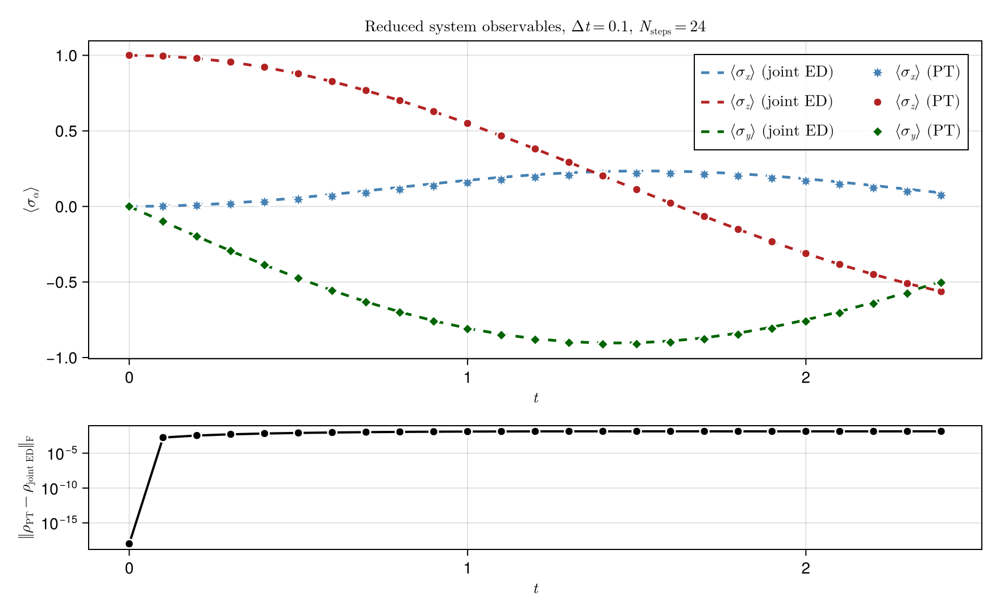
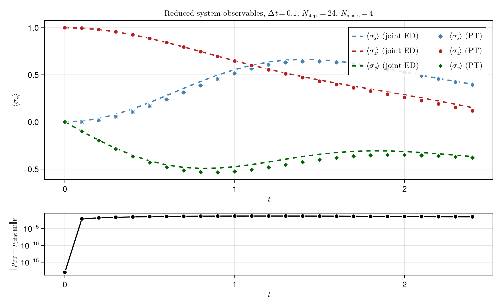

Spin-bath process tensor
This example builds a process tensor for a spin coupled to a spin bath. We first use a single bath mode, then repeat the same idea with several bath modes.
The point of the example is not only to reproduce reduced dynamics. The point is to see the process tensor itself as the reusable object. Once the bath has been absorbed into this object, we can probe the system with different preparations, uninterrupted evolution, observable readouts, and later more general instruments.
See also the Single-Mode Process Tensor tutorial and the plotting scripts scripts/pt_tfim_singlemode.jl and scripts/pt_tfim_multimode.jl, which regenerate the figures below.
The object we build
A usual reduced-dynamics calculation evolves the joint system-environment state,
\[\rho_{SE}(t) = U(t)\,\rho_S(0)\otimes\rho_E(0)\,U^\dagger(t),\]
and then traces out the environment,
\[\rho_S(t) = \operatorname{Tr}_E[\rho_{SE}(t)].\]
A process tensor reorganizes this computation. Instead of repeating the full system-environment evolution for every system-level question, we integrate out the environment once and store its influence as a tensor network in time.
Conceptually, a process tensor acts as a multi-time map,
\[\rho_S(t_n) = \mathcal{T}_{n:0} \left[ \mathcal{A}_{n-1},\ldots,\mathcal{A}_1,\rho_S(0) \right],\]
where the maps $\mathcal{A}_k$ are the interventions or instruments inserted on the system at intermediate times.
In this package, the process tensor is represented as a PT-MPO. Its memory bonds carry the bath influence between different time steps. Once this object is built, the bath no longer appears explicitly in the user-facing reduced calculation.
build_process_tensor(...) is the expensive object-building step. Calls such as evolve(pt, ρ0) and evaluate_process(pt, seq) contract this object with a particular instrument schedule.
Physical model
We use one system spin with Hamiltonian
\[H_S = S_x.\]
The bath is made of one or more spin modes. A single mode has Hamiltonian
\[H_B = \omega S_x,\]
and couples to the system through
\[H_{SB} = g\,S_z^{(B)} S_z^{(S)}.\]
Both the system and bath modes start in the up state.
Setup
using Printf
using ProcessTensors
using ITensors
using LinearAlgebra
using ITensors.Ops: Exact
const dt = 0.1
const nsteps = 24
const final_time = dt * nsteps
const joint_ed_frob_tol_single = 0.08
const joint_ed_frob_tol_multimode = 0.05
const dsys = 2
const denv_single = 2
const nmodes = 4
const denv_multimode = 2^nmodes
const mode_w = [0.5 + 0.1 * m for m in 1:nmodes]
const mode_g = [0.2 + 0.3 * m for m in 1:nmodes]
function print_pt_summary(label::AbstractString, result, frob_tol::Float64)
@printf("%s\n", label)
@printf(" max ‖ρ_PT − ρ_joint ED‖_F = %.3e\n", result.max_frob)
@printf(" ⟨σ_x⟩ at t=0 (PT / ED) = %.6f / %.6f\n", result.sx_pt[1], result.sx_ed[1])
@printf(" ⟨σ_x⟩ at t=T (PT / ED) = %.6f / %.6f\n", result.sx_pt[end], result.sx_ed[end])
println()
@assert all(isfinite, result.sx_pt) && all(isfinite, result.sx_ed)
@assert all(isfinite, result.frob_err)
@assert result.max_frob < frob_tol
endprint_pt_summary (generic function with 1 method)Exact diagonalization reference
To audit the process-tensor construction on this small system, we compare the reduced states from evolve against exact joint Liouville evolution of the combined system and bath,
\[|\rho_{SE}(t)\rangle\rangle = e^{t\mathcal{L}_{SE}}|\rho_{SE}(0)\rangle\rangle,\]
followed by a partial trace over the bath Hilbert space,
\[\rho_S(t) = \operatorname{Tr}_E[\rho_{SE}(t)].\]
The helpers below convert Liouville MPS/MPO objects to dense matrices, extract the reduced system state, and report Frobenius errors along the trajectory. They are used only for this validation block.
σx = ComplexF64[0 1; 1 0]
σy = ComplexF64[0 -im; im 0]
σz = ComplexF64[1 0; 0 -1]
function pauli_expectations(ρ::AbstractMatrix{<:Number})
return real(tr(ρ * σx)), real(tr(ρ * σy)), real(tr(ρ * σz))
end
function reduced_system_ρ(state_l, dsys::Int)
rho_h = to_hilbert(state_l)
sites = [
only(filter(i -> plev(i) == 0 && hastags(i, "Site"), inds(rho_h.core[j])))
for j in eachindex(rho_h.core)
]
T = foldl(*, rho_h)
A = Array(T, prime.(sites)..., sites...)
return reshape(ComplexF64.(A), dsys, dsys)
end
function partial_trace_system(rho_h, dsys::Int, denv::Int)
sites = [
only(filter(i -> plev(i) == 0 && hastags(i, "Site"), inds(rho_h.core[j])))
for j in eachindex(rho_h.core)
]
T = foldl(*, rho_h)
A = Array(T, prime.(sites)..., sites...)
ρ4 = reshape(ComplexF64.(A), dsys, denv, dsys, denv)
ρ_red = zeros(ComplexF64, dsys, dsys)
for e in 1:denv
ρ_red .+= @view ρ4[:, e, :, e]
end
return ρ_red
end
function compare_trajectory_to_joint_ed(trajectory, rho_sys0_h, system, H_full, joint_liouv, rho_joint0_l, denv::Int)
sx_pt, sx_ed = Float64[], Float64[]
frob_err = Float64[]
ρ_pt = reduced_system_ρ(to_liouville(rho_sys0_h; sites=system.sites), dsys)
ρ_ed = partial_trace_system(to_hilbert(rho_joint0_l), dsys, denv)
push!(sx_pt, pauli_expectations(ρ_pt)[1])
push!(sx_ed, pauli_expectations(ρ_ed)[1])
push!(frob_err, norm(ρ_pt - ρ_ed))
for k in 1:nsteps
t = k * dt
ρ_pt = reduced_system_ρ(trajectory.states_liouville[k], dsys)
U_L = liouvillian_propagator_itensor(H_full, joint_liouv, t; alg=Exact())
rho_joint_l = apply(U_L, copy(rho_joint0_l); cutoff=0.0, maxdim=typemax(Int))
ρ_ed = partial_trace_system(to_hilbert(rho_joint_l), dsys, denv)
push!(sx_pt, pauli_expectations(ρ_pt)[1])
push!(sx_ed, pauli_expectations(ρ_ed)[1])
push!(frob_err, norm(ρ_pt - ρ_ed))
end
return (; sx_pt, sx_ed, frob_err, max_frob=maximum(frob_err))
endcompare_trajectory_to_joint_ed (generic function with 1 method)Single-mode spin bath
We first couple one system spin to one bath spin.
sys_phys = siteinds("S=1/2", 1)
env_phys = siteinds("S=1/2", 1)
env_liouv = liouv_sites(env_phys)
H_sys = OpSum()
H_sys += 1.0, "Sx", 1
system = spin_system(sys_phys, H_sys)
ρ_env0_h = to_dm(MPS(env_phys, ["Up"]))
ρ_env0_l = to_liouville(ρ_env0_h; sites=env_liouv)
H_env = OpSum()
H_env += 1.0, "Sx", 1
coupling = OpSum()
coupling += 1.0, "Sz", 1, "Sz", 2
mode = spin_mode(env_liouv, H_env, ρ_env0_l; coupling=coupling)
bath = spin_bath([mode])ProcessTensors.SpinBath
modes: 1
space: Liouville
site dims: 4
bath Liouville dimension: 4
mode summary:
[1] SpinMode(dim=4, H_terms=1, coupling_terms=1)
Build the process tensor
The bath is integrated out here. The returned ProcessTensor stores the environment influence on the system across all time steps.
pt_single = build_process_tensor(
system,
system.sites[1];
environment=bath,
dt=dt,
nsteps=nsteps,
)
println("Single-mode process tensor:")
println(pt_single)
@assert pt_single isa ProcessTensor
@assert pt_single.nsteps == nsteps
@assert pt_single.dt == dtSingle-mode process tensor:
24-step ProcessTensor{SpinSystem, SpinBath} | dt=0.1 | t_final=2.4 | maxlinkdim=4
system: SpinSystem(nsites=1, dissipative=false)
environment: SpinBath(nmodes=1, D_bath=4, coupling=true)
core: MPO{Liouville}(length=24, linkdims=[4, 4, 4, …, 4])
Probe with instruments
Once pt_single exists, reduced questions are asked by contracting it with an instrument schedule.
evolve(pt, ρ0) is the convenience interface for uninterrupted evolution: prepare the initial state, let the system pass through each time step, and read out the reduced states at the requested times.
evaluate_process(pt, seq) exposes the same contraction with an explicit InstrumentSeq. Bind ObservableMeasurement to the PT output leg at the final time label (output_sites(pt, pt.nsteps - 1)) so the instrument ITensor contracts with the reduced state without index warnings.
ρ_sys0_h = to_dm(MPS(sys_phys, ["Up"]))
trajectory_single = evolve(pt_single, ρ_sys0_h)
println("evolve returned $(length(trajectory_single.times)) snapshots")
Sz = OpSum()
Sz += 1.0, "Sz", 1
k_final = pt_single.nsteps - 1
final_sites = output_sites(pt_single, k_final)
seq_final_sz = default_schedule(pt_single)
add!(seq_final_sz, StatePreparation(ρ_sys0_h), 0)
add!(seq_final_sz, ObservableMeasurement(Sz, final_sites), pt_single.nsteps)
final_sz_schedule = evaluate_process(pt_single, seq_final_sz)
Sz_obs = instrument_itensor(
ObservableMeasurement(Sz, final_sites),
final_sites,
k_final,
)
ρ_final_T = foldl(*, trajectory_single.states_liouville[end])
final_sz_evolve = real(inner(ρ_final_T, Sz_obs))
println("Final ⟨σ_z⟩ from evaluate_process: ", real(final_sz_schedule))
println("Final ⟨σ_z⟩ from evolve: ", final_sz_evolve)
@assert abs(real(final_sz_schedule) - final_sz_evolve) < 1e-8evolve returned 24 snapshots
Final ⟨σ_z⟩ from evaluate_process: -0.28177970572848354
Final ⟨σ_z⟩ from evolve: -0.28177970572848354
Validate against joint ED
joint_phys = Index[sys_phys[1], env_phys[1]]
joint_liouv_single = liouv_sites(joint_phys)
H_full_single = OpSum()
H_full_single += 1.0, "Sx", 1
H_full_single += 1.0, "Sx", 2
H_full_single += 1.0, "Sz", 1, "Sz", 2
psi_joint = MPS(joint_phys, ["Up", "Up"])
ρ_joint0_l_single = to_liouville(to_dm(psi_joint); sites=joint_liouv_single)
result_single = compare_trajectory_to_joint_ed(
trajectory_single,
ρ_sys0_h,
system,
H_full_single,
joint_liouv_single,
ρ_joint0_l_single,
denv_single,
)
print_pt_summary("Single-mode spin bath", result_single, joint_ed_frob_tol_single)
println("Final ⟨σ_x⟩ (PT): ", result_single.sx_pt[end])Single-mode spin bath
max ‖ρ_PT − ρ_joint ED‖_F = 1.384e-02
⟨σ_x⟩ at t=0 (PT / ED) = 0.000000 / 0.000000
⟨σ_x⟩ at t=T (PT / ED) = 0.072706 / 0.090215
Final ⟨σ_x⟩ (PT): 0.07270620255130214

The plotting script compares all Pauli expectations and shows the Frobenius error on a log scale in the lower panel.
Multimode spin bath
The multimode case changes the bath, not the process-tensor idea. We couple the same system spin to several independent bath spins,
\[H_B^{(m)} = \omega_m S_x^{(m)}, \qquad H_{SB}^{(m)} = g_m S_z^{(m)} S_z^{(S)}.\]
Both cases use the same build-then-probe workflow. The difference is the bath memory stored in the PT-MPO, not the user-facing API.
env_phys_multi = siteinds("S=1/2", nmodes)
env_liouv_multi = liouv_sites(env_phys_multi)
modes = SpinMode[]
for m in 1:nmodes
ρ_env_h = to_dm(MPS([env_phys_multi[m]], ["Up"]))
ρ_env_l = to_liouville(ρ_env_h; sites=[env_liouv_multi[m]])
H_mode = OpSum()
H_mode += mode_w[m], "Sx", 1
coupling_m = OpSum()
coupling_m += mode_g[m], "Sz", 1, "Sz", 2
push!(modes, spin_mode([env_liouv_multi[m]], H_mode, ρ_env_l; coupling=coupling_m))
end
bath_multi = spin_bath(modes)ProcessTensors.SpinBath
modes: 4
space: Liouville
site dims: 4, 4, 4, 4
bath Liouville dimension: 256
mode summary:
[1] SpinMode(dim=4, H_terms=1, coupling_terms=1)
[2] SpinMode(dim=4, H_terms=1, coupling_terms=1)
[3] SpinMode(dim=4, H_terms=1, coupling_terms=1)
[4] SpinMode(dim=4, H_terms=1, coupling_terms=1)
Build the process tensor
pt_multi = build_process_tensor(
system,
system.sites[1];
environment=bath_multi,
dt=dt,
nsteps=nsteps,
)
println("Multimode process tensor ($nmodes bath spins):")
println(pt_multi)
@assert pt_multi isa ProcessTensor
@assert maxlinkdim(pt_multi) >= maxlinkdim(pt_single)Multimode process tensor (4 bath spins):
24-step ProcessTensor{SpinSystem, SpinBath} | dt=0.1 | t_final=2.4 | maxlinkdim=256
system: SpinSystem(nsites=1, dissipative=false)
environment: SpinBath(nmodes=4, D_bath=256, coupling=true)
core: MPO{Liouville}(length=24, linkdims=[256, 256, 256, …, 256])
Probe with instruments
trajectory_multi = evolve(pt_multi, ρ_sys0_h)
println("evolve returned $(length(trajectory_multi.times)) snapshots")
final_sites_multi = output_sites(pt_multi, pt_multi.nsteps - 1)
seq_multi_sz = default_schedule(pt_multi)
add!(seq_multi_sz, StatePreparation(ρ_sys0_h), 0)
add!(seq_multi_sz, ObservableMeasurement(Sz, final_sites_multi), pt_multi.nsteps)
final_sz_multi = evaluate_process(pt_multi, seq_multi_sz)
Sz_obs_multi = instrument_itensor(
ObservableMeasurement(Sz, final_sites_multi),
final_sites_multi,
pt_multi.nsteps - 1,
)
ρ_final_multi_T = foldl(*, trajectory_multi.states_liouville[end])
final_sz_multi_evolve = real(inner(ρ_final_multi_T, Sz_obs_multi))
println("Final ⟨σ_z⟩ from evaluate_process: ", real(final_sz_multi))
println("Final ⟨σ_z⟩ from evolve: ", final_sz_multi_evolve)
@assert abs(real(final_sz_multi) - final_sz_multi_evolve) < 1e-8evolve returned 24 snapshots
Final ⟨σ_z⟩ from evaluate_process: 0.058771844744097135
Final ⟨σ_z⟩ from evolve: 0.058771844744097135
Validate against joint ED
joint_phys_multi = Index[sys_phys[1], env_phys_multi...]
joint_liouv_multi = liouv_sites(joint_phys_multi)
H_full_multi = let
H = OpSum()
H += 1.0, "Sx", 1
for m in 1:nmodes
H += mode_w[m], "Sx", m + 1
H += mode_g[m], "Sz", m + 1, "Sz", 1
end
H
end
joint_init = vcat(["Up"], fill("Up", nmodes))
psi_joint_multi = MPS(joint_phys_multi, joint_init)
ρ_joint0_l_multi = to_liouville(to_dm(psi_joint_multi); sites=joint_liouv_multi)
result_multi = compare_trajectory_to_joint_ed(
trajectory_multi,
ρ_sys0_h,
system,
H_full_multi,
joint_liouv_multi,
ρ_joint0_l_multi,
denv_multimode,
)
print_pt_summary("Multimode spin bath ($nmodes modes)", result_multi, joint_ed_frob_tol_multimode)
println("Final ⟨σ_x⟩ (PT): ", result_multi.sx_pt[end])Multimode spin bath (4 modes)
max ‖ρ_PT − ρ_joint ED‖_F = 4.662e-02
⟨σ_x⟩ at t=0 (PT / ED) = 0.000000 / 0.000000
⟨σ_x⟩ at t=T (PT / ED) = 0.392997 / 0.400626
Final ⟨σ_x⟩ (PT): 0.39299716779096566

What controls the error?
The main algorithmic error comes from the short-time system-environment propagator used inside build_process_tensor. With a first-order Trotter splitting, smaller dt reduces that construction error. In larger calculations, also monitor PT-MPO bond truncation (cutoff, maxdim) and accumulated roundoff in long contractions.
build_process_tensorintegrates out the bath once; the returnedProcessTensoris the reusable open-system object.evolve(pt, ρ0)andevaluate_process(pt, seq)probe that same object with different instrument schedules—no second bath evolution is needed.- Multimode baths change the PT-MPO memory structure, not the user-facing workflow for preparing states, evolving, or measuring observables.